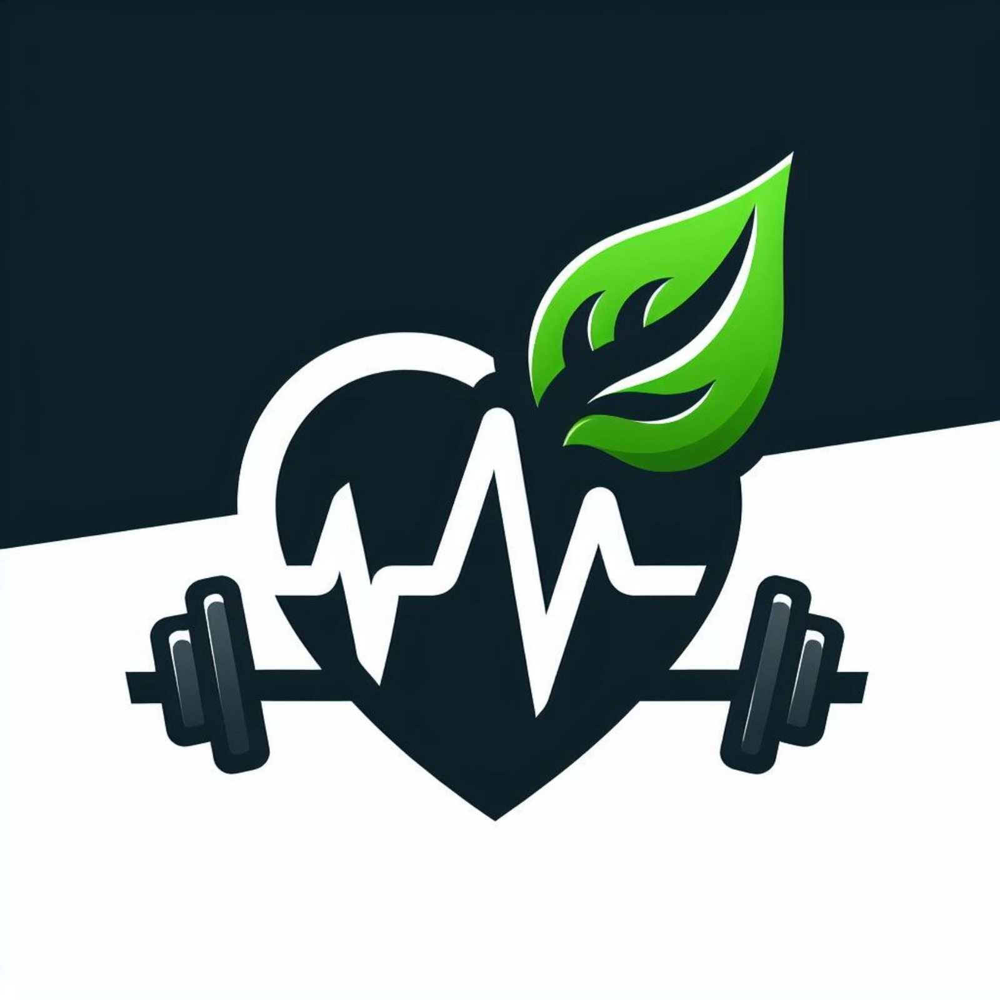

Kesehatan merupakan hal penting dalam kehidupan. Dengan menjaga pola makan, rutin berolahraga, dan istirahat yang cukup, kita dapat menjalani kehidupan yang lebih sehat dan bahagia.
Mulailah kebiasaan hidup sehat dari sekarang. Sayangi tubuhmu karena kesehatan adalah investasi terbaik untuk masa depan.
Mulai Hidup Sehat
Website ini memberikan banyak informasi bermanfaat tentang cara menjaga kesehatan dan menerapkan pola hidup sehat.
Informasinya mudah dipahami dan membantu saya lebih memperhatikan pola makan, olahraga, serta waktu istirahat.
Tips hidup sehat di website ini mengingatkan saya untuk lebih rajin menjaga kebersihan diri.
Website yang bagus dan informatif. Saya mendapatkan banyak pengetahuan baru tentang kesehatan.